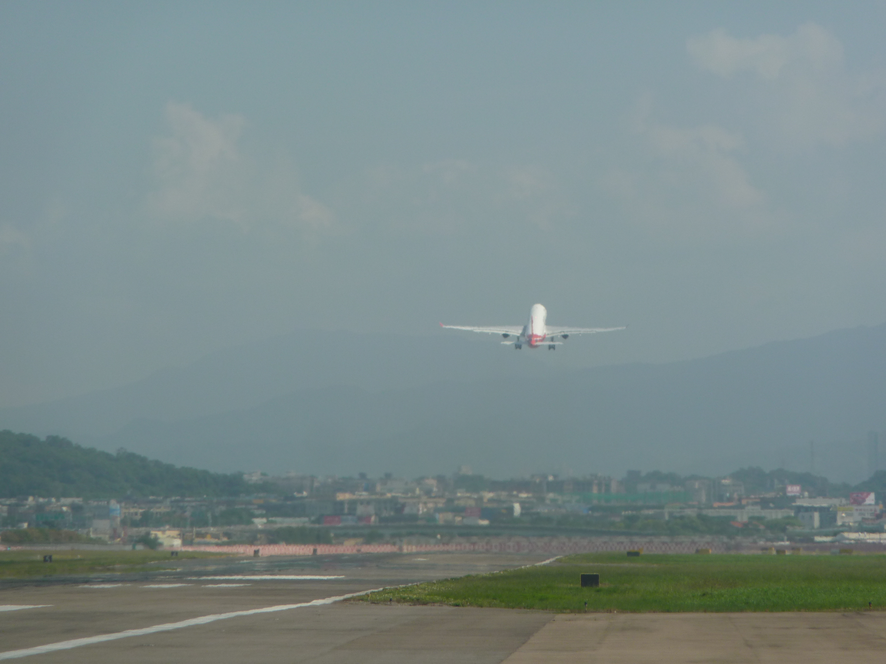
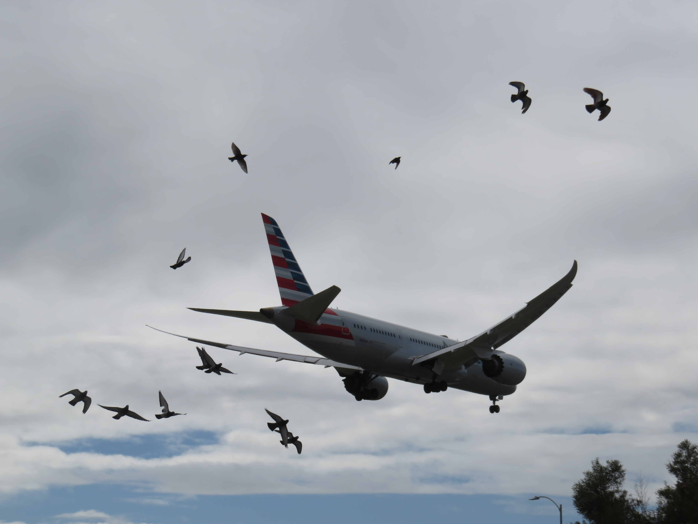
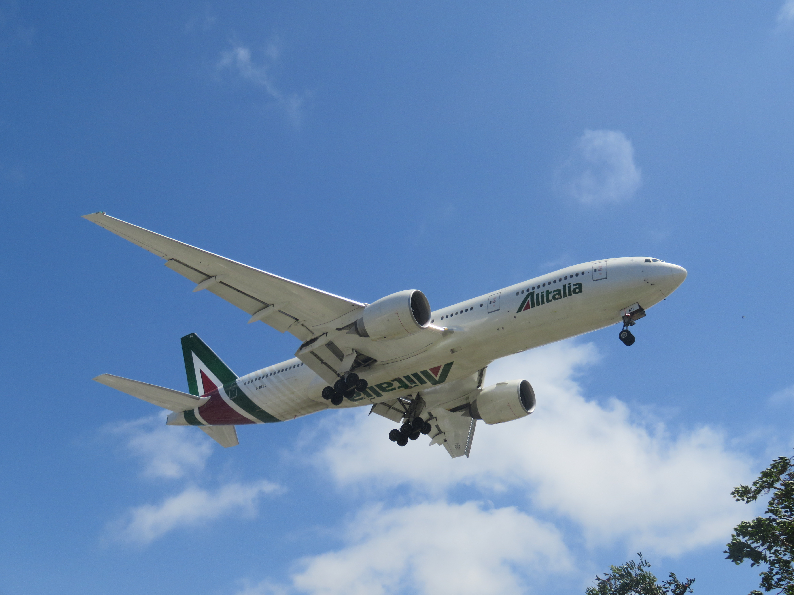
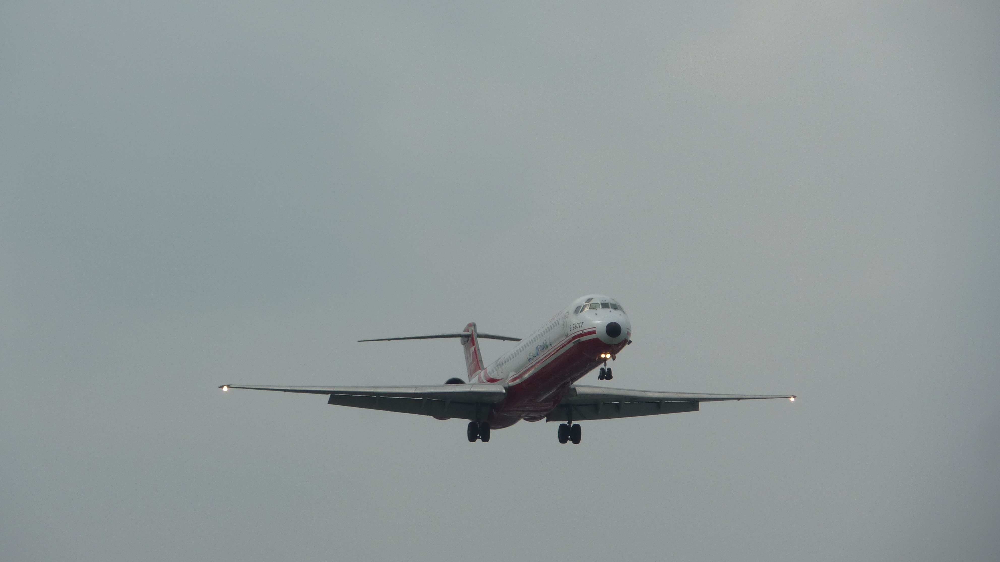
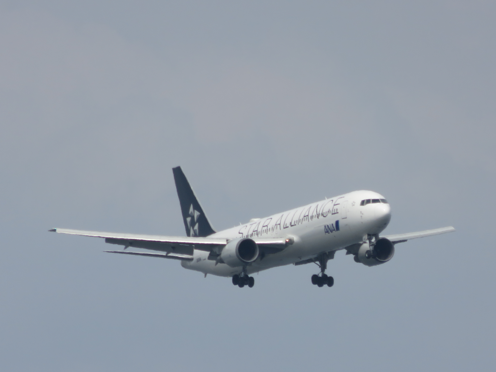
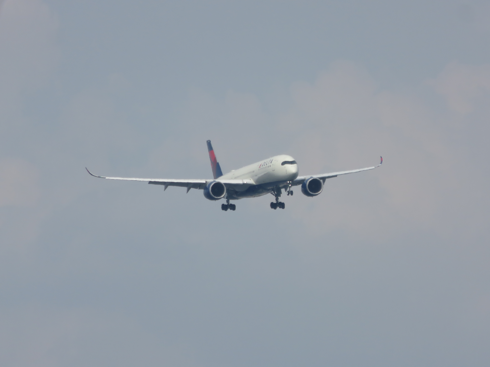

T'way Airways aircraft landing at Taipei Songshan Airport

Shanghai Airlines aircraft taking off from Taipei Songshan Airport

American Airlines at Los Angeles Intl. Airport

Alitalia on approach to Los Angeles Intl. Airport

Far Eastern Air Transport McDonnell Douglas MD-82 on approach to Taipei Songshan Airport

Saudia Boeing 777 on approach to Los Angeles Intl. Airport

ANA aircraft in Star Alliance livery at Tokyo Haneda Airport

Delta Airbus A350 on approach to Tokyo Haneda Airport